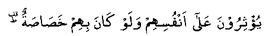

The Sahaabah (RA), as a class, were an example of righteousness. They attained a standard that is rather difficult to copy in a modern society. We would be fortunate if we really attain even a portion of their character. Some of their qualities are peculiarly their own and self-sacrifice is one of these. Allah Ta’ala has made a mention of this in the Holy Qur-aan in these words.

"They prefer others above themselves, even though they are themselves in need. (SLIX : V9)."